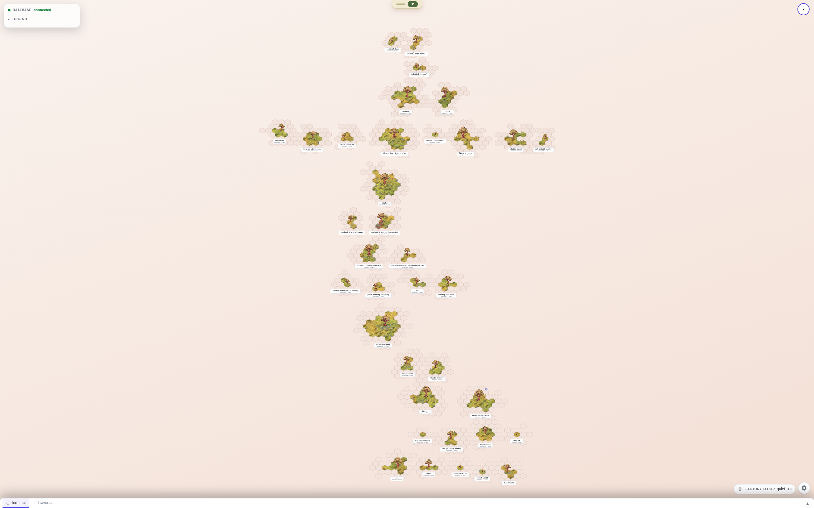
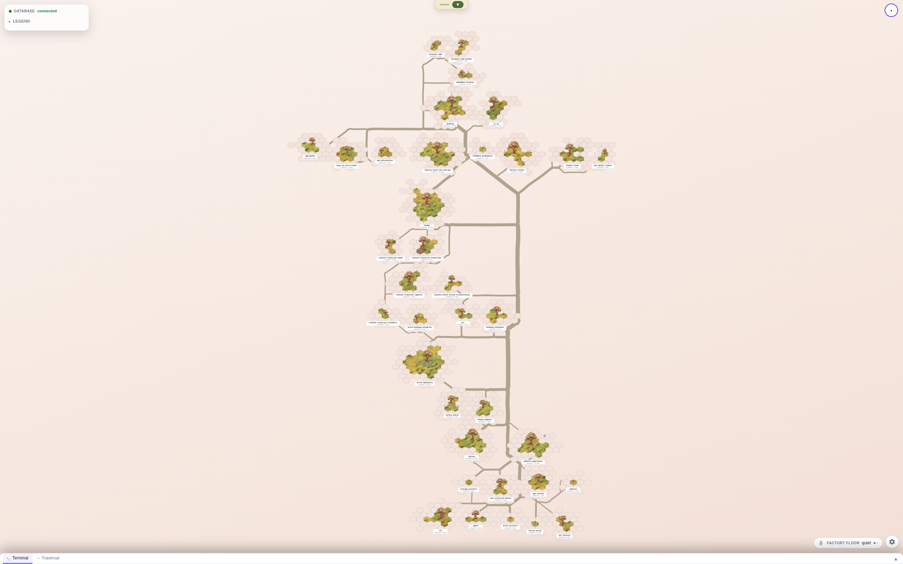

Left: roads and worn trace suppressed. Right: the mounted layer as shipped. Same data, terrain, labels and camera within each pair.


36 islands · 212 capability parcels · 95 dependency edges · 114 ribbons. Original captures: 2560 × 1600. Shown at reduced size; the detail sheet enlarges the same working-view pixels.